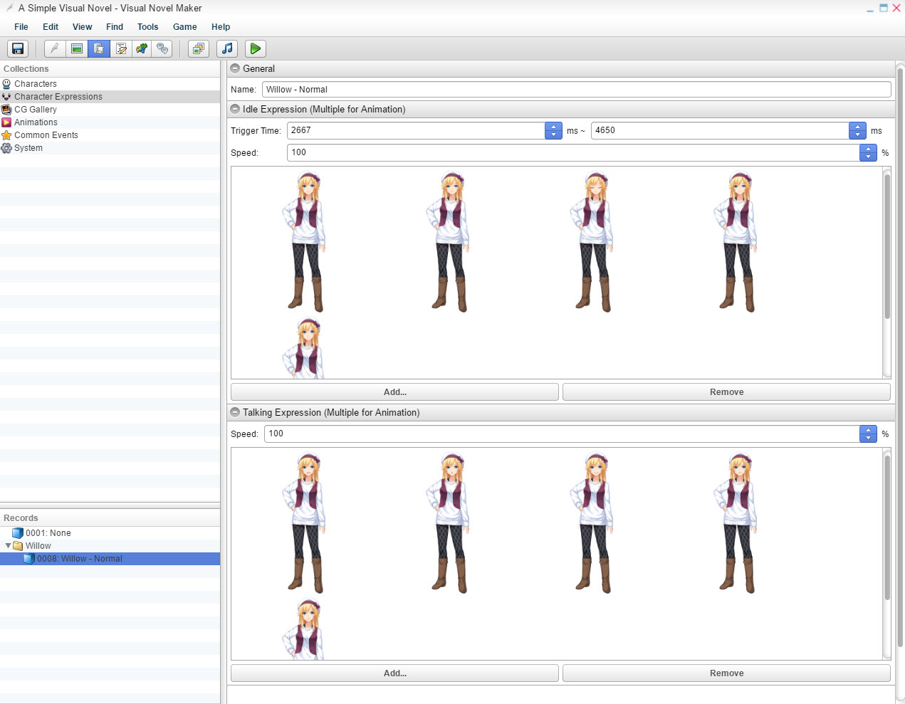

通用

名称
- 角色表情的名称。表情
触发时间
- 仅适用于空闲表情。空闲表情将在您设置的毫秒数之间随机播放。例如，如果您设置 2000 毫秒 - 4000 毫秒，它将从 2000 毫秒（最短）到 4000 毫秒（最长）开始计算何时播放空闲动画。速度 -
动画的速度。您可以从 1% - 1000% 进行选择。默认值为 100。注意：
您可以使用表情导入器快速为您创建表情。如果您有 200 多个图像，这将非常有用。HTML